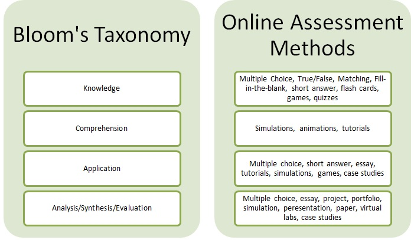

Session Details
- Date: 18th December 2020
- Topic: Assessing Students Online
- Resource Person: Dr. Chalinda K. Beneragama
Topics covered in this session
- Types of Assessments
- 9 Ways to Assess Student Learning Online
- Bloom's Taxonomy Vs Online Assessment Methods
- Tips for Evaluating Student Learning Online
- 20 Formative Assessment Tools
Types of Assessments
- Diagnostic assessments
- Formative assessments (assessments for learning)
- Summative assessments (assessments of learning)
- Forma-summative assessments (assessments as learning)
9 Ways to Assess Student Learning Online
- Online Quizzes
Quizzes are a traditional assessment tool. Plus, when paired with technology, they are an excellent way to engage student learning. Quiz questions can take a number of forms, such as multiple-choice, fill-in-the-blanks, and hotspots. One benefit of quizzes is that they are short and easy to assess. Another is that question order and options can be randomized, so each student’s quiz is unique.
- Open-Ended/Essay Questions
Open-ended or essay-type questions are one of the most popular qualitative assessment methods. They prompt learners to explore their thoughts, feelings, and opinions, while testing their overall comprehension of a topic. This type of question encourages critical thinking and is best suited for evaluating higher-level learning. Essay questions require a longer time for students to think, organize, and compose their answers.
- Drag-And-Drop Activities
Drag-and-drops are a type of assessment that show a learner’s ability to link information and apply knowledge to solve a practical problem. You can incorporate both images and text in a drag-and-drop activity, giving it a real-world feel that is both challenging and engaging.
- Online Interviews
You can incorporate a video conference within your online teaching to give learning a more personal touch. During brief online interviews, students can demonstrate their proficiency in language, music, nursing, and other courses, for example, where mastery of specific skills is an important requirement. Sometimes it may be beneficial to conduct group interviews – for team project reports, for example.
- Dialogue Simulations
A dialogue simulation is a way to train learners for real-life conversations with customers, colleagues, and others. When creating a conversation activity based on a situation that a student may face on the job, let them know what to expect and provide a safe place to practice their reactions and responses.
- Online Polls
Polls allow you to capture feedback directly from your audience about their learning experience. They can be used to measure anything from learning satisfaction (Kirkpatrick Level One feedback) to why a student made a particular choice during a lesson. Online surveys are highly engaging for learners because they allow them to share their opinions, make themselves heard, and are quick to complete.
- Game-Type Activities
Game-type activities turn a series of test questions into a game. For example, a trivia game might ask learners to answer a certain number of questions within a period of time and award points based on the number of correct answers.
- Peer Evaluation and Review
Peer evaluation turns the tables to put learners into the instructor’s seat and allow students to review and edit each other’s work. Such activities give each participant a chance to reflect on their knowledge and then communicate their feedback in a consistent and structured way.
- Forum Posts
A forum is an online discussion board organized around a topic. Asking students to contribute to a forum post is an excellent way to gauge their understanding, pique their interest, and support their learning. In this activity, students are given a critical thinking question based on a lesson or a reading, and are asked to reflect on both. Their answers are posted to a forum and their peers are given the chance to respond.
Bloom's Taxonomy Vs Online Assessment Methods

Tips for Evaluating Student Learning Online
- If assignments are complex and multi-part, it is more effective to break these down into smaller components such that the instructor can assess students at several points in the learning process and provide feedback.
- If course material is highly technical, consider using ungraded, self-check quizzes as a formative assessment to check student learning and determine whether teaching strategies should be altered.
- Provide students with explicit and detailed rubrics to accurately communicate expectations for student performance.
- Self and peer assessments can be used to reduce instructor workload, improve student learning experiences and build community.
- Using a variety of assessment techniques in an online course is recommended.
- Q & A discussion boards can also be useful to field common student questions.
- Look for opportunities to provide feedback to the entire class – i.e. an announcement or e-mail summarizing patterns observed in student assignments.
- Use synchronous technologies when appropriate (i.e. Blackboard Collaborate) to communicate with students in real time. As online students have very different schedules, it is suggested that synchronous meetings be recorded such that students that cannot attend live can watch at a later time.